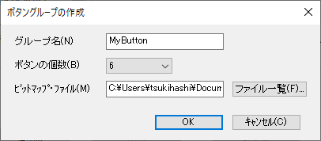
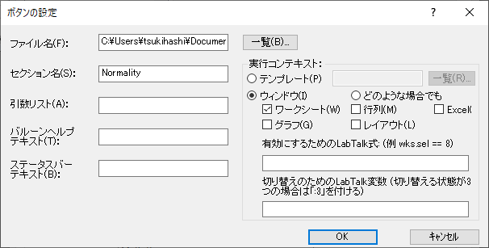
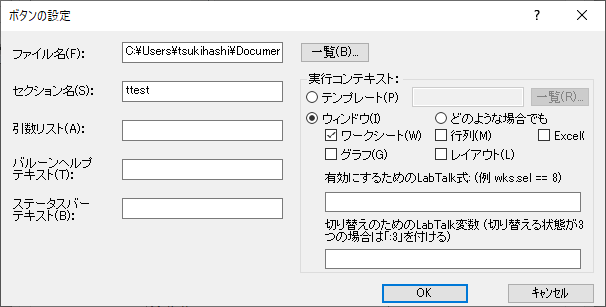
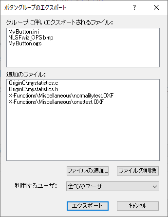

LabTalkによるカスタムツールのためのOPX作成
Tutorial-Creating-OPX-for-Custom-Tools
概要
Originでは、独自の LabTalkスクリプトを.opxファイルとしてパックし、他のユーザと共有することができます。さらに、LabTalkスクリプトを呼び出すカスタムボタンを作成し、このボタンを.opxファイルに含めて共有することもできます。
学習する項目
このチュートリアルでは、以下の項目について解説します。
- 既存のOPXファイルをンストールする方法
- LabTalkファイル (.OGS) を使用してXファンクションを呼び出す方法
- カスタムボタンを作成してパッケージファイル (.OPX) にエクスポートする方法
- OPXでファイルを更新し、パッケージマネージャで再パックする方法
- 別のマシンとファイルを共有する方法
ステップ
OPXファイルをインストール
<Origin Installation Directory>/Samples/LabTalk Script Examples/フォルダにあるOPXファイルMyStatistics.opxをドラッグ&ドロップします。このインストール済みパッケージには、次の4つのファイルが含まれています。
- \OriginC\mystatistics.c
- \OriginC\mystatistics.h
- \X-Functions\Miscellaneous\normalitytest.OXF
- \X-Functions\Miscellaneous\onettest.OXF
ファイルのフォルダ構造もパッケージに記憶され、パッケージのインストール時に再作成されます。
カスタムボタンを作成
このセクションでは、LabTalkスクリプトを使用してXファンクション (ユーザ定義) を呼び出す方法と、LabTalkスクリプトファイルを呼び出すカスタムボタンを作成する方法を説明します。
-
Xファンクションを実行するOGSファイルを作成
- コードビルダボタンをクリックします。
- コードビルダで、新規ボタンをクリックして、MyButtonという名前のLabTalkスクリプトファイルをUser Filesフォルダに作成します。
- 次のスクリプトを入力し、ファイルを保存します。コードビルダを閉じます。
// 正規性の検定
[Normality]
normalitytest -d;
// 一群のt検定
[ttest]
onettest -d;
-
新しいボタングループ
- Originメニューで、表示：ツールバーを選び、カスタマイズダイアログを開きます。
- ボタングループタブを開き、新規作成ボタンをクリックしてボタングループの作成ダイアログを開きます。
- グループ名としてMyButtonを設定し、ボタンの個数ドロップダウンリストで6 を選択し、ビットマップファイルとしてUser FileフォルダのUserdef.bmpファイルを選択します。

- OKボタンをクリックし、MyButton.iniファイルをデフォルトパスに保存します。
-
最初のボタンの設定
- カスタマイズダイアログでグループリストからMyButtonの項目を選択してボタンパネルで最初の4つのボタンを削除します。
- ボタンをクリックして選択し、ボタングループの設定ボタンをクリックしてボタンの設定ダイアログを開きます。
- ファイル名でMyButton.ogsを選択して、セクション名でNormalityと入力し、行列、Excel、グラフ、レイアウトにチェックを外します。

-
2番目のボタンの設定
 ボタンをクリックして選択し、ボタングループの設定ボタンをクリックしてボタンの設定ダイアログを開きます。
ボタンをクリックして選択し、ボタングループの設定ボタンをクリックしてボタンの設定ダイアログを開きます。- ファイル名でMyButton.ogsを選択して、セクション名でttest と入力し、行列、Excel、グラフ、レイアウトにチェックを外します。

カスタムツールのOPXファイルを作成
これで、LabTalkスクリプト、X ファンクション、および Origin Cファイルに関連付けられたカスタムツールができたのでOPXファイルを作成して、このカスタム ツールを他のユーザと共有できます。
- エクスポートボタンをクリックしてボタングループのエクスポートダイアログを開き、ファイルの追加ボタンをクリックしてユーザファイルフォルダにある以下の4つのファイルを選択します。
- \OriginC\mystatistics.c
- \OriginC\mystatistics.h
- \X-Functions\Miscellaneous\normalitytest.OXF
- \X-Functions\Miscellaneous\onettest.OXF

- エクスポートボタンをクリックし、MyButton.OPXファイルをユーザファイルフォルダに保存します。
- カスタマイズダイアログを閉じます。
OPXファイルを編集
OPXファイルにパッケージ化されているOCやXファンクションファイルを更新する場合、 パッケージマネージャで編集することができます。ここでは\X-Functions\Miscellaneous\normalitytest.OXF が更新されたの仮定してOPXファイルの再パック操作をします。
- メニューからツール：パッケージマネージャを選択してダイアログを開きます。ダイアログで、メニューからファイル: 開くを選択し、ユーザファイルフォルダにあるMyButton.OPXファイルを開きます。
- ファイルの再パックボタンをクリックしてファイルを再度パックします。
- パッケージノードで、バージョンを2に更新します。
- ファイルメニューの保存を選択してダイアログを閉じます。
OPXファイルを共有
OPXファイルは別のユーザと共有できます。
- OPXファイルを別のマシンにコピーし、MyButton.opxファイルをOriginにドラッグアンドドロップします。
- パッケージが正常にインストールされると、Origin に新しいツールバーが表示されます。
- メニューからツール：パッケージマネージャを選択してダイアログを開きます。ダイアログで、ツール: インストール済みパッケージの閲覧...を選択します。.インストールされたパッケージがダイアログに一覧表示されます。名前、バージョン、説明などのパッケージ情報を参照し、必要に応じて選択したパッケージをアンインストールできます。